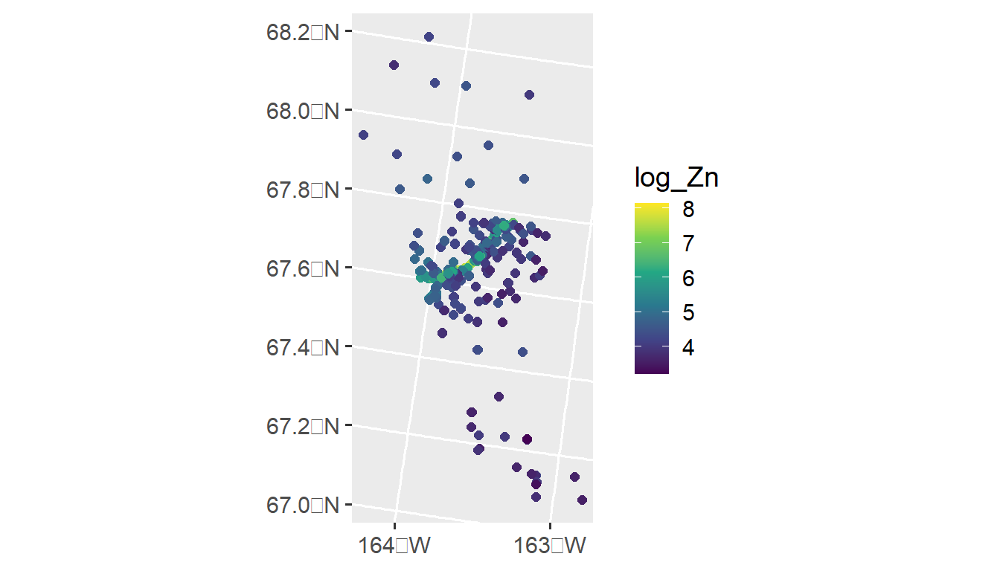
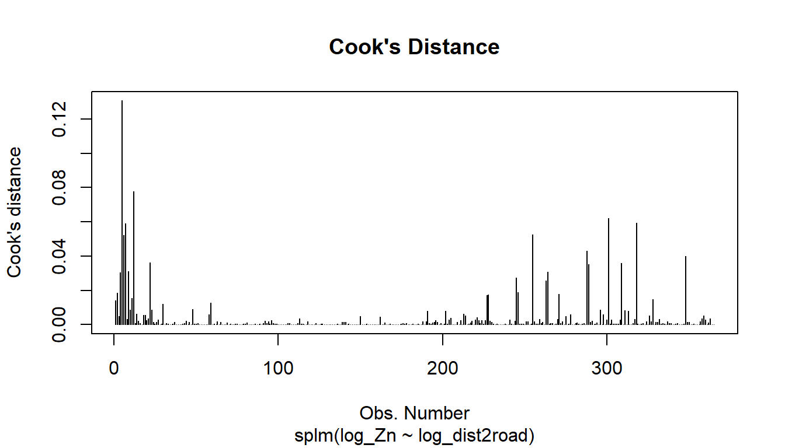
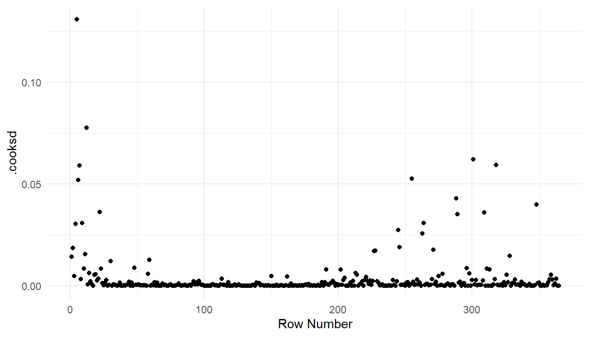
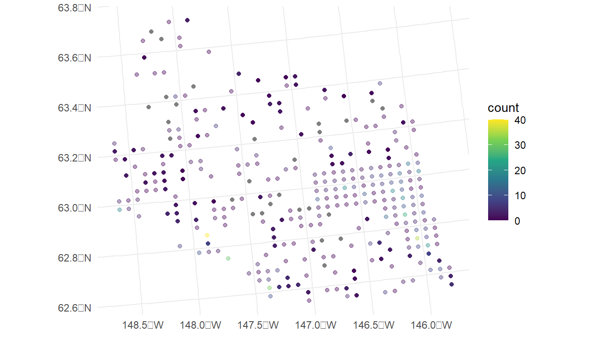

1 Spatial Linear Models in spmodel
Throughout this section, we will use both the spmodel package and the ggplot2 package:
Goals:
- Construct and describe the spatial linear model
- Review the nonspatial linear model with independent random errors.
- Explain how the spatial linear model differs from the linear model with independent random errors.
- Explain how modeling for point-referenced data with distance-based model covariances differs from modeling for areal data with neighborhood-based model covariances.
- Fit a spatial linear model using
spmodel - Make spatial predictions at unobserved locations (i.e., Kriging)
- Predict the response value at an unobserved location for point-referenced data.
- Quantify prediction uncertainty.
- Calculate leave-one-out cross-validation residuals.
1.1 The Spatial Linear Model
1.1.1 Reviewing the Nonspatial Linear Model
Before we describe the spatial linear model, we review nonspatial linear models, which many of us are already familiar with (whether we realize it or not). They incredibly flexible statistical tools that encompass all sorts of model types. In fact, multiple linear regression, analysis of variance (ANOVA), splines, polynomial regression, additive models, and mixed effect models are all linear models! Linear models are designed to relate a response variable (i.e., dependent variable) to one or more explanatory variables (i.e., independent variable, predictor variable, covariate) while accounting for random error. More formally, the linear model may be written (for a single observation) as \[ \begin{split} \text{y} & = \beta_0 + \beta_1 x_1 + \beta_2 x_2 + \dots + \beta_k + \epsilon \\ i & = 1, 2, \dots, k \end{split} \tag{1.1}\]
where \(\text{y}\) is the value of the response variable, \(\beta_0\) is the overall intercept, \(\beta_i\) is the \(i\)th fixed effect (sometimes called a “slope”) parameter, which captures the average effect on \(\text{y}\) resulting from a one-unit increase in \(x_i\), the value of the \(i\)th (of \(k\)) explanatory variable, and \(\epsilon\) is random error. Generalizing this model to \(n\) distinct observations yields \[
\begin{split} \text{y}_j & = \beta_0 + \beta_1 x_{1, j} + \beta_2 x_{2, j} + \dots + \beta_k x_{k, j} + \epsilon_j \\
i & = 1, 2, \dots, k \\
j & = 1, 2, \dots, n
\end{split}
\tag{1.2}\] where the model terms from Equation 1.1 are now indexed via a subscript \(j\) that ranges from one to \(n\), the sample size. The index \(i\) still ranges from one to \(k\), the number of explanatory variables. Linear models are commonly fit in R using the lm() function.
The model in Equation 1.2 is sometimes written in matrix notation instead of index notation. Let
\[ \mathbf{y} = \begin{bmatrix} \text{y}_1 \\ \text{y}_2 \\ \vdots \\ \text{y}_j \\ \end{bmatrix}, \mathbf{X} = \begin{bmatrix} 1 & x_{1, 1} & x_{1, 2} & \dots & x_{1, k} \\ 1 & x_{2, 1} & x_{2, 2} & \dots & x_{2, k} \\ \vdots & \vdots & \vdots & \vdots & \vdots \\ 1 & x_{n, 1} & x_{n, 2} & \dots & x_{n, k} \\ \end{bmatrix}, \boldsymbol{\beta} = \begin{bmatrix} \beta_0 \\ \beta_1 \\ \vdots \\ \beta_k \end{bmatrix}, \text{ and } \boldsymbol{\epsilon} = \begin{bmatrix} \epsilon_0 \\ \epsilon_1 \\ \vdots \\ \epsilon_j \end{bmatrix}, \] where for a sample size \(n\), \(\mathbf{y}\) is the \(n \times 1\) column vector of response variables, \(\mathbf{X}\) is the \(n \times p\) matrix of explanatory variables (sometimes called the “design” or “model” matrix), \(\boldsymbol{\beta}\) is the \(p \times 1\) column vector of fixed effects, and \(\boldsymbol{\epsilon}\) is the \(n \times 1\) column vector of random errors.
Then Equation 1.2 in matrix notation is written as \[ \mathbf{y} = \mathbf{X} \boldsymbol{\beta} + \boldsymbol{\epsilon}. \tag{1.3}\]
There are typically a few assumptions inherent in models built using Equation 1.3. First, we typically assume that \(\text{E}(\boldsymbol{\epsilon}) = \mathbf{0}\), where \(\text{E}(\cdot)\) denotes expectation. Less formally, this means that the average of all random errors is zero. Second, we typically assume \(\text{Cov}(\boldsymbol{\epsilon}) = \sigma^2_\epsilon \mathbf{I}\), where \(\text{Cov}(\cdot)\) denotes covariance, \(\sigma^2_\epsilon\) denotes a variance parameter, and \(\mathbf{I}\) denotes the identity matrix. Less formally, this means that each random error is independent of other random errors (i.e., we gain no information about observation two’s random error by knowing observation one’s random error). Moreover, we also usually assume these random errors are normally distributed.
1.1.2 Introducing the Spatial Linear Model
As mentioned previously, nonspatial linear models are very flexible tools that can capture all sorts of interesting processes. Unfortunately, they do assume that random errors are independent of one another, often unreasonable for spatial data as observations tend to be correlated in space. Ignoring this spatial dependence and fitting nonspatial linear models generally leads to invalid fixed effect inference and poor predictions. Spatial linear models leverage spatial dependence in the random error structure of a linear model, creating models that more accurately reflect the spatial process in study and perform substantially better than nonspatial linear models. Fortunately, incorporating spatial dependence is straightforward using spmodel, which we discuss shortly.
More formally, we accommodate spatial dependence in linear models by adding an \(n \times 1\) spatial random effect, \(\boldsymbol{\tau}\), to Equation 1.3, yielding the model
\[ \mathbf{y} = \mathbf{X} \boldsymbol{\beta} + \boldsymbol{\tau} + \boldsymbol{\epsilon}, \tag{1.4}\]
where \(\boldsymbol{\tau}\) is independent of \(\boldsymbol{\epsilon}\), \(\text{E}(\boldsymbol{\tau}) = \mathbf{0}\), \(\text{Cov}(\boldsymbol{\tau}) = \sigma^2_\tau \mathbf{R}\), and \(\mathbf{R}\) is a matrix that determines the spatial dependence structure in \(\mathbf{y}\) and depends on a range parameter, \(\phi\), which controls the behavior of the spatial covariance as a function of distance. We discuss \(\mathbf{R}\) in more detail shortly. The parameter \(\sigma^2_\tau\) is called the spatially dependent random error variance or partial sill. The parameter \(\sigma^2_\epsilon\) is called the spatially independent random error variance or nugget. These two variance parameters are henceforth more intuitively written as \(\sigma^2_{de}\) and \(\sigma^2_{ie}\), respectively. The covariance of \(\mathbf{y}\) is denoted \(\boldsymbol{\Sigma}\) and given by \(\sigma^2_{de} \mathbf{R} + \sigma^2_{ie} \mathbf{I}\). The parameters that compose this covariance are contained in the vector \(\boldsymbol{\theta}\), which is called the covariance parameter vector.
Equation 1.4 is called the spatial linear model. The spatial linear model applies to both point-referenced and areal (i.e., lattice) data. Spatial data are point-referenced when the elements in \(\mathbf{y}\) are observed at point-locations indexed by x-coordinates and y-coordinates on a spatially continuous surface with an infinite number of locations. For example, consider sampling soil at any point-location in a field. Spatial data are areal when the elements in \(\mathbf{y}\) are observed as part of a finite network of polygons whose connections are indexed by a neighborhood structure. For example, the polygons may represent states in a country who are neighbors if they share at least one boundary.
1.1.3 Modeling Covariance in the Spatial Linear Model
A primary way in which the model in Equation 1.4 differs for point-referenced and areal data is the way in which \(\mathbf{R}\) in \(\text{Cov}(\boldsymbol{\tau}) = \sigma^2_{de} \mathbf{R}\) is modeled. For point-referenced data, the \(\mathbf{R}\) matrix is generally constructed using the Euclidean distance between spatial locations. For example, the exponential spatial covariance function generates an \(\mathbf{R}\) matrix given by
\[ \mathbf{R} = \exp(-\mathbf{H} / \phi), \tag{1.5}\]
where \(\mathbf{H}\) is a matrix of Euclidean distances among observations and \(\phi\) is the range parameter. Some spatial covariance functions have an extra parameter – one example is the Matérn covariance. Spatial models for point-referenced data are fit in spmodel using the splm() function.
On the other hand, \(\mathbf{R}\) for areal data is often constructed from how the areal polygons are oriented in space. Commonly, a neighborhood structure is used to construct \(\mathbf{R}\), where two observations are considered to be “neighbors” if they share a common boundary. In the simultaneous auto-regressive (SAR) model,
\[ \mathbf{R} = [(\mathbf{I} - \phi \mathbf{W}) (\mathbf{I} - \phi \mathbf{W}^\top)]^{-1} \tag{1.6}\]
where \(\mathbf{I}\) is the identity matrix and \(\mathbf{W}\) is a weight matrix that describes the neighborhood structure among observations. A popular neighborhood structure is queen contiguity, in which two polygons are neighbors if they share a boundary. It is important to clarify that observations are not considered neighbors with themselves. Spatial models for areal data are fit in spmodel using the spautor() function.
1.2 Model Fitting
1.2.1 Data Introduction
The moss data in the spmodel package is an sf (simple features) object (Pebesma 2018) that contains observations on heavy metals in mosses near a mining road in Alaska. An sf object is a special data.frame built for storing spatial information and contains a column called geometry. We can view the first few rows of moss by running
moss
#> Simple feature collection with 365 features and 7 fields
#> Geometry type: POINT
#> Dimension: XY
#> Bounding box: xmin: -445884.1 ymin: 1929616 xmax: -383656.8 ymax: 2061414
#> Projected CRS: NAD83 / Alaska Albers
#> # A tibble: 365 × 8
#> sample field_dup lab_rep year sideroad log_dist2road log_Zn
#> <fct> <fct> <fct> <fct> <fct> <dbl> <dbl>
#> 1 001PR 1 1 2001 N 2.68 7.33
#> 2 001PR 1 2 2001 N 2.68 7.38
#> 3 002PR 1 1 2001 N 2.54 7.58
#> 4 003PR 1 1 2001 N 2.97 7.63
#> 5 004PR 1 1 2001 N 2.72 7.26
#> 6 005PR 1 1 2001 N 2.76 7.65
#> 7 006PR 1 1 2001 S 2.30 7.59
#> 8 007PR 1 1 2001 N 2.78 7.16
#> 9 008PR 1 1 2001 N 2.93 7.19
#> 10 009PR 1 1 2001 N 2.79 8.07
#> # ℹ 355 more rows
#> # ℹ 1 more variable: geometry <POINT [m]>More information about moss can be found by running help("moss", "spmodel").
Our goal is to model the distribution of log zinc concentration (log_Zn) using a spatial linear model. We can visualize the distribution of log zinc concentration (log_Zn) in moss by running
ggplot(moss, aes(color = log_Zn)) +
geom_sf(size = 2) +
scale_color_viridis_c() +
scale_x_continuous(breaks = seq(-163, -164, length.out = 2)) +
theme_gray(base_size = 14)
An important predictor variable may be the log of the distance to the haul road, log_dist2road, which is measured in meters. Later we use spmodel to fit a spatial linear model with with log_Zn as the response and log_dist2road as a predictor.
1.2.2 splm() Syntax and Output Interpretation
The splm() function shares similar syntactic structure with the lm() function used to fit linear models without spatial dependence (Equation 1.3). splm() generally requires at least three arguments
-
formula: a formula that describes the relationship between the response variable (\(\mathbf{y}\)) and explanatory variables (\(\mathbf{X}\)) -
data: adata.frameorsfobject that contains the response variable, explanatory variables, and spatial information. -
spcov_type: the spatial covariance type ("exponential","matern","spherical", etc)- There are 17 different types
If data is an sf object, then spatial information is stored in the object’s geometry. However, if data is a data.frame or tibble (a special data.frame), then the names of the variables that represent the x-coordinates and y-coordinates must also be provided as two additional arguments via xcoord and ycoord.
We fit a spatial linear model regressing log zinc concentration (log_Zn) on log distance to a haul road (log_dist2road) using an exponential spatial covariance function by running
spmod <- splm(formula = log_Zn ~ log_dist2road, data = moss,
spcov_type = "exponential")The estimation method in splm() is specified by estmethod. The default estimation method is restricted maximum likelihood ("reml"). Additional options include maximum likelihood "ml", semivariogram-based composite likelihood ("sv-cl") (Curriero and Lele 1999), and semivariogram-based weighted least squares ("sv-wls") (Cressie 1985). When the estimation method is semivariogram-based weighted least squares, the weights are specified by weights with a default of Cressie weights (“cressie").
We summarize the model fit by running
summary(spmod)
#>
#> Call:
#> splm(formula = log_Zn ~ log_dist2road, data = moss, spcov_type = "exponential")
#>
#> Residuals:
#> Min 1Q Median 3Q Max
#> -2.6801 -1.3606 -0.8103 -0.2485 1.1298
#>
#> Coefficients (fixed):
#> Estimate Std. Error z value Pr(>|z|)
#> (Intercept) 9.76825 0.25216 38.74 <2e-16 ***
#> log_dist2road -0.56287 0.02013 -27.96 <2e-16 ***
#> ---
#> Signif. codes: 0 '***' 0.001 '**' 0.01 '*' 0.05 '.' 0.1 ' ' 1
#>
#> Pseudo R-squared: 0.683
#>
#> Coefficients (exponential spatial covariance):
#> de ie range
#> 3.595e-01 7.897e-02 8.237e+03The fixed effects coefficient table contains estimates, standard errors, z-statistics, and asymptotic p-values for each fixed effect. From this table, we notice there is evidence that mean log zinc concentration significantly decreases with distance from the haul road (p-value < 2e-16).
We can relate some of the components in the summary output to the model in Equation 1.4:
- The values in the
Estimatecolumn of theCoefficients (fixed)table form \(\boldsymbol{\hat{\beta}}\), an estimate of \(\boldsymbol{\beta}\). - The
devalue of 0.36 in theCoefficients (exponential spatial covariance)table is \(\hat{\sigma}^2_{de}\), which is an estimate of \(\sigma^2_{de}\), the variance of \(\boldsymbol{\tau}\) (commonly called the partial sill). - The
ievalue of 0.079 in theCoefficients (exponential spatial covariance)table is \(\hat{\sigma}^2_{ie}\), which is an estimate of \(\sigma^2_{ie}\), the variance of \(\boldsymbol{\epsilon}\) (commonly called the nugget). - The
rangevalue of 8,237 in theCoefficients (exponential spatial covariance)table is \(\hat{\phi}\), which is an estimate of \(\phi\) (recall \(\phi\) is the range parameter in Equation 1.5 that controls the behavior of the spatial covariance as a function of distance).
The pseudo R-squared emulates the R-squared from nonspatial linear models, quantifying the proportion of variability in the model explained by the fixed effects. Via varcomp(), we can identify how much variability is attributed to distinct parts of the model:
varcomp(spmod)
#> # A tibble: 3 × 2
#> varcomp proportion
#> <chr> <dbl>
#> 1 Covariates (PR-sq) 0.683
#> 2 de 0.260
#> 3 ie 0.0571We see most of the variability is explained by the fixed effects (pseudo R-squared) and the spatially dependent random error (de), while little variability is independent (ie).
The summary() output, while useful, is printed to the R console and not easy to manipulate. The tidy() function turns the coefficient table into a tibble (i.e., a special data.frame) that is easy to manipulate. We tidy the fixed effects by running
tidy(spmod)
#> # A tibble: 2 × 5
#> term estimate std.error statistic p.value
#> <chr> <dbl> <dbl> <dbl> <dbl>
#> 1 (Intercept) 9.77 0.252 38.7 0
#> 2 log_dist2road -0.563 0.0201 -28.0 0We tidy the spatial covariance parameters by running
tidy(spmod, effects = "spcov")
#> # A tibble: 3 × 3
#> term estimate is_known
#> <chr> <dbl> <lgl>
#> 1 de 0.360 FALSE
#> 2 ie 0.0790 FALSE
#> 3 range 8237. FALSEThe is_known column indicates whether the parameter is assumed known. By default, all parameters are assumed unknown. We discuss this more in Chapter 2.
1.2.3 Model Fit and Diagnostics
The quality of model fit can be assessed using a variety of statistics readily available in spmodel, including AIC, AICc, and pseudo R-squared. Additionally, model diagnostics such as leverage, fitted values, residuals (several types), and Cook’s distance. While both the model fit statistics and the diagnostics can be found with individual functions like AIC(), residuals(), cooks.distance(), etc., they can also be computed using glance() (for the model fit statistics) and augment() (for the diagnostics).
glance(spmod)
#> # A tibble: 1 × 9
#> n p npar value AIC AICc logLik deviance pseudo.r.squared
#> <int> <dbl> <int> <dbl> <dbl> <dbl> <dbl> <dbl> <dbl>
#> 1 365 2 3 367. 373. 373. -184. 363. 0.683The output from glance() shows model fit statistics for the spatial linear model with an exponential covariance structure for the errors.
The augment() function provides many model diagnostics statistics in a single tibble:
augment(spmod)
#> Simple feature collection with 365 features and 7 fields
#> Geometry type: POINT
#> Dimension: XY
#> Bounding box: xmin: -445884.1 ymin: 1929616 xmax: -383656.8 ymax: 2061414
#> Projected CRS: NAD83 / Alaska Albers
#> # A tibble: 365 × 8
#> log_Zn log_dist2road .fitted .resid .hat .cooksd .std.resid
#> * <dbl> <dbl> <dbl> <dbl> <dbl> <dbl> <dbl>
#> 1 7.33 2.68 8.26 -0.928 0.0200 0.0142 1.18
#> 2 7.38 2.68 8.26 -0.880 0.0200 0.0186 1.35
#> 3 7.58 2.54 8.34 -0.755 0.0225 0.00482 0.647
#> 4 7.63 2.97 8.09 -0.464 0.0197 0.0305 1.74
#> 5 7.26 2.72 8.24 -0.977 0.0215 0.131 3.45
#> 6 7.65 2.76 8.21 -0.568 0.0284 0.0521 1.89
#> 7 7.59 2.30 8.47 -0.886 0.0300 0.0591 1.96
#> 8 7.16 2.78 8.20 -1.05 0.0335 0.00334 0.439
#> 9 7.19 2.93 8.12 -0.926 0.0378 0.0309 1.26
#> 10 8.07 2.79 8.20 -0.123 0.0314 0.00847 0.723
#> # ℹ 355 more rows
#> # ℹ 1 more variable: geometry <POINT [m]>augment() returns a tibble with many model diagnostics statistics, including
-
.fitted, the fitted value, calculated from the estimated fixed effects in the model -
.hat, the Mahalanobis distance, a metric of leverage -
.cooksd, the Cook’s distance, a metric of influence -
.std.resid, the standardized residual
If the model is correct, then the standardized residuals have mean 0, standard deviation 1, and are uncorrelated.
The plot() function can be used on a fitted model object to construct a few pre-specified plots of these model diagnostics. For example, the following code plots the Cook’s distance, a measure of influence, which quantifies each observation’s impact on model fit:
plot(spmod, which = 4)
The other 7 plots for model objects fit with splm() can be read about in the help: ?plot.spmodel.
If the grammar of graphics plotting syntax in ggplot2 is more familiar, then we can also construct plots with the augmented model:
aug_df <- augment(spmod)
ggplot(data = aug_df, aes(x = seq_len(nrow(aug_df)), y = .cooksd)) +
geom_point() +
theme_minimal() +
labs(x = "Row Number")
1.2.4 Model Comparison
So far we have relied on the intuition that the spatial model performs better than a nonspatial one, but we have not yet communicated this empirically. We fit a nonspatial linear model using splm() with spcov_type = "none" (this is equivalent to a model fit using lm(), but using splm() provides access to other helper functions in spmodel):
none <- splm(formula = log_Zn ~ log_dist2road, data = moss,
spcov_type = "none")The glances() function allows us to compare the model fit statistics for a few different models simultaneously. Two of these fit statistics are AIC and AICc (Akaike 1974), which are commonly used to select a “best” model – the lower the AIC/AICc, the better the model. The AICc is more appropriate for small samples, but for large samples AIC/AICc are nearly equivalent. glances() automatically orders the models by AICc:
glances(spmod, none)
#> # A tibble: 2 × 10
#> model n p npar value AIC AICc logLik deviance pseudo.r.squared
#> <chr> <int> <dbl> <int> <dbl> <dbl> <dbl> <dbl> <dbl> <dbl>
#> 1 spmod 365 2 3 367. 373. 373. -184. 363. 0.683
#> 2 none 365 2 1 634. 636. 636. -317. 363. 0.671The AIC and AICc are significantly lower for the spatial model, which suggest the spatial model fits the data better than the nonspatial model.
The default estimation method is restricted maximum likelihood (estmethod = "reml"). Models fit using REML can only be compared using AIC/AICc when the models have the same set of explanatory variables. Models with different sets of explanatory variables can be compared via AIC/AICc when fitting using maximum likelihood (estmethod = "ml"). AIC/AICc are not defined for models fit using estmethod = "sv-wls" or estmethod = "sv-cl".
Another approach to model selection is leave-one-out cross validation (Hastie et al. 2009). In leave-one-out cross validation, a single observation is removed from the data, the model is re-fit, and a prediction is made for the held-out observation. Then, a loss metric like mean-squared-prediction error (MSPE) is computed and used to evaluate model fit. The lower the mean-squared-prediction error, the better the model fit.
loocv() returns several useful fit statistics:
-
bias: The average difference between the observed value and its leave-one-out prediction. This should be close to zero for well-fitting models. -
MSPE: The mean squared prediction error between the observed value and its leave-one-out prediction. -
RMSPE: The square root ofMSPE. -
cor2: The squared correlation between the observed value and its leave-one-out prediction. This can be viewed as a “predictive” R-squared, emulating the “squared correlation” interpretation of R-squared in nonspatial linear models.
We do not recommend using pseudo R-squared as a criteria by which to compare models, as it is simply a descriptive statistic that provides insight model fit. The “predictive” R-squared statistic (cor2 in loocv()) is a type of R-squared statistic that can be compared across models.Instead, consider the cor2 statistic, which is a type of R-squared statistic that is generally comparable across models.
1.2.4.1 Model Selection Strategies
We use models to simplify and explain incredibly complex systems. As George Box noted, all models are wrong but some are useful. In short, model selection is a challenging problem, and people approach it with varying perspectives. Some prefer a single model be hypothesized and fit based on first principles, some prefer using algorithmic approaches like stepwise regression to find the most appropriate model, and some people are in between. We think it is reasonable to use your expert knowledge of the system being studied to determine a set of candidate models. Then, you can combine this expert knowledge with empirical tools like AIC, AICc, likelihood ratio tests, and cross validation to distinguish among these candidate models and determine the most appropriate model. We note that even if model selection is performed on fixed effects and covariance structures simultaneously using maximum likelihood (estmethod = "ml") and AIC, AICc, and/or likelihood ratio tests, that the most appropriate model should then be refit using restricted maximum likelihood (estmethod = "reml") before proceeding with model interpretation and, eventually, spatial prediction at unobserved locations. Zuur et al. (2009), Johnson and Omland (2004), and Zimmerman and Ver Hoef (2024) provide further insights.
If you don’t know which spatial covariance types to start with, try spcov_type = "exponential" and spcov_type = "gaussian". These two are well-understood and have notably different covariance behavior for observations that are close to one another. It is not uncommon to see little difference in model fit between spatial models while still seeing a dramatic difference in model fit between spatial models and nonspatial models. To see a list of all spatial covariance types, run help("splm", "spmodel") or visit this link.
1.3 Spatial Prediction
We could use spmod from the moss data to make spatial predictions of log Zinc at different locations of interest near the haul road. However, to familiarize ourselves with more of the example data sets in spmodel, we will switch gears and use the moose data to build a model and make spatial predictions at the locations in moose_preds.
1.3.1 Data Introduction
The moose data in the spmodel package contains observations from a moose survey in Alaska. The Alaska Department of Fish and Game performed the survey on 218 spatial locations throughout the region of interest. Our goal is to predict the moose count in 100 spatial locations in the moose_pred data frame that were not surveyed. Both elev, the elevation of the spatial location, and strat, a stratification variable based on landscape metrics that is either "L" for Low or "M" for medium, are possible predictors for moose count.
moose
#> Simple feature collection with 218 features and 4 fields
#> Geometry type: POINT
#> Dimension: XY
#> Bounding box: xmin: 269085 ymin: 1416151 xmax: 419976.2 ymax: 1541763
#> Projected CRS: NAD83 / Alaska Albers
#> First 10 features:
#> elev strat count presence geometry
#> 1 468.9167 L 0 0 POINT (293542.6 1541016)
#> 2 362.3125 L 0 0 POINT (298313.1 1533972)
#> 3 172.7500 M 0 0 POINT (281896.4 1532516)
#> 4 279.6250 L 0 0 POINT (298651.3 1530264)
#> 5 619.6000 L 0 0 POINT (311325.3 1527705)
#> 6 164.1250 M 0 0 POINT (291421.5 1518398)
#> 7 163.5000 M 0 0 POINT (287298.3 1518035)
#> 8 186.3500 L 0 0 POINT (279050.9 1517324)
#> 9 362.3125 L 0 0 POINT (346145.9 1512479)
#> 10 430.5000 L 0 0 POINT (321354.6 1509966)We visualize the moose counts by running
ggplot(data = moose, aes(colour = count)) +
geom_sf() +
scale_colour_viridis_c(limits = c(0, 40)) +
theme_minimal()
From our plot, we see that there are a large number of observed moose counts at or near 0. Therefore, perhaps a generalized linear model in the Poisson or negative binomial family might be more appropriate for this particular data set. We will come back to this issue in Chapter 3; however, for this section, we assume that a standard spatial linear model is appropriate.
We also see in the plot that the spatial locations in the survey were clearly not randomly selected. Random selection of spatial locations is only required for inference in design-based analyses. For model-based analyses, random selection of spatial locations is not necessarily an assumption. See Brus (2021) and Dumelle et al. (2022) for more.
1.3.2 Moose Count Predictions
In this section, we show how to use predict() and augment() to perform spatial prediction (also called Kriging) for point-referenced data from a model fit with splm(). First, we fit a spatial model to the moose data with a "spherical" spatial covariance and elev, strat, and their interaction as predictors in the model:
moosemod <- splm(count ~ elev * strat, data = moose,
spcov_type = "spherical")
tidy(moosemod)
#> # A tibble: 4 × 5
#> term estimate std.error statistic p.value
#> <chr> <dbl> <dbl> <dbl> <dbl>
#> 1 (Intercept) 0.310 9.02 0.0344 0.973
#> 2 elev 0.0141 0.00806 1.76 0.0792
#> 3 stratM 6.93 2.26 3.07 0.00217
#> 4 elev:stratM -0.0273 0.0130 -2.10 0.0357elev * strat is shorthand for elev + strat + elev:strat.
We then use predict() to predict the moose count at the spatial locations in moose_preds. The predict() function for models fit with splm() works in the same way as it does for models fit with lm(). We provide predict() with the fitted model object, along with a newdata argument that is an sf object, data.frame, or tibble that contains the locations at which to predict. newdata must have the same predictors as those used to fit the spatial model. We see that moose_preds contains the predictors (elev and strat) and the locations at which to predict:
moose_preds
#> Simple feature collection with 100 features and 2 fields
#> Geometry type: POINT
#> Dimension: XY
#> Bounding box: xmin: 269085 ymin: 1416151 xmax: 419976.2 ymax: 1541763
#> Projected CRS: NAD83 / Alaska Albers
#> First 10 features:
#> elev strat geometry
#> 1 143.4000 L POINT (401239.6 1436192)
#> 2 324.4375 L POINT (352640.6 1490695)
#> 3 158.2632 L POINT (360954.9 1491590)
#> 4 221.3125 M POINT (291839.8 1466091)
#> 5 208.6875 M POINT (310991.9 1441630)
#> 6 218.3333 L POINT (304473.8 1512103)
#> 7 126.8125 L POINT (339011.1 1459318)
#> 8 122.0833 L POINT (342827.3 1463452)
#> 9 191.0000 L POINT (284453.8 1502837)
#> 10 105.3125 L POINT (391343.9 1483791)# results omitted
predict(moosemod, newdata = moose_preds)The output of predict() (not rendered in this document) gives predicted moose counts for the 100 unobserved spatial locations in moose_preds.
Examining some of the predictions, we see that a few are negative. These unreasonable negative values are a further indication that we should use a spatial generalized linear model in Chapter 3.
The augment() function can also be used to obtain predictions for unobserved locations. While the required arguments to augment() are the same as the arguments used in predict() (the name of the fitted model object along with a newdata data frame), the output of augment() is an sf object with predictions in the .fitted column. Often, using augment() is more convenient than using predict(), as augment() returns an object with predictions alongside the spatial locations and any predictors used in the model.
moose_aug <- augment(moosemod, newdata = moose_preds)
moose_aug
#> Simple feature collection with 100 features and 3 fields
#> Geometry type: POINT
#> Dimension: XY
#> Bounding box: xmin: 269386.2 ymin: 1418453 xmax: 419976.2 ymax: 1541763
#> Projected CRS: NAD83 / Alaska Albers
#> # A tibble: 100 × 4
#> elev strat .fitted geometry
#> * <dbl> <chr> <dbl> <POINT [m]>
#> 1 143. L 3.45 (401239.6 1436192)
#> 2 324. L 1.59 (352640.6 1490695)
#> 3 158. L -0.267 (360954.9 1491590)
#> 4 221. M 2.39 (291839.8 1466091)
#> 5 209. M 7.62 (310991.9 1441630)
#> 6 218. L -1.02 (304473.8 1512103)
#> 7 127. L -1.23 (339011.1 1459318)
#> 8 122. L -1.43 (342827.3 1463452)
#> 9 191 L -0.239 (284453.8 1502837)
#> 10 105. L 0.657 (391343.9 1483791)
#> # ℹ 90 more rowsWe can construct a plot of the predictions with
ggplot(data = moose, aes(colour = count)) +
geom_sf(alpha = 0.4) +
geom_sf(data = moose_aug, aes(colour = .fitted)) +
scale_colour_viridis_c(limits = c(0, 40)) +
theme_minimal()In the plot, the observed counts are also shown with faded points. We see that, most of the predictions are at or near 0, but spatial locations that are close in proximity to observed counts that are very large have a higher predicted count (for example, the point in the southwest region that is directly south of the observed count coloured yellow is predicted to be around 10).
1.3.3 Cross Validation
Recall the loocv() function can be used to perform leave-one-out cross validation on a fitted model object.
loocv(moosemod)
#> # A tibble: 1 × 4
#> bias MSPE RMSPE cor2
#> <dbl> <dbl> <dbl> <dbl>
#> 1 -0.000201 32.2 5.67 0.1201.4 R Code Appendix
library(spmodel)
library(ggplot2)
moss
ggplot(moss, aes(color = log_Zn)) +
geom_sf(size = 2) +
scale_color_viridis_c() +
scale_x_continuous(breaks = seq(-163, -164, length.out = 2)) +
theme_gray(base_size = 14)
spmod <- splm(formula = log_Zn ~ log_dist2road, data = moss,
spcov_type = "exponential")
summary(spmod)
varcomp(spmod)
tidy(spmod)
tidy(spmod, effects = "spcov")
caribou_mod <- splm(z ~ tarp + water + tarp:water,
data = caribou, spcov_type = "pexponential",
xcoord = x, ycoord = y)
summary(caribou_mod)
anova(caribou_mod)
tidy(anova(caribou_mod))
glance(spmod)
augment(spmod)
plot(spmod, which = 4)
aug_df <- augment(spmod)
ggplot(data = aug_df, aes(x = seq_len(nrow(aug_df)), y = .cooksd)) +
geom_point() +
theme_minimal() +
labs(x = "Row Number")
plot(spmod, which = 7)
none <- splm(formula = log_Zn ~ log_dist2road, data = moss,
spcov_type = "none")
summary(none)
lmod <- lm(formula = log_Zn ~ log_dist2road, data = moss)
summary(lmod)
glances(spmod, none)
anova(spmod, none)
loocv(spmod)
loocv(none)
moose
ggplot(data = moose, aes(colour = count)) +
geom_sf() +
scale_colour_viridis_c(limits = c(0, 40)) +
theme_minimal()
moosemod <- splm(count ~ elev * strat, data = moose,
spcov_type = "spherical")
tidy(moosemod)
moose_preds
# results omitted
predict(moosemod, newdata = moose_preds)
moose_aug <- augment(moosemod, newdata = moose_preds)
moose_aug
ggplot(data = moose, aes(colour = count)) +
geom_sf(alpha = 0.4) +
geom_sf(data = moose_aug, aes(colour = .fitted)) +
scale_colour_viridis_c(limits = c(0, 40)) +
theme_minimal()
augment(moosemod, newdata = moose_preds, interval = "prediction",
level = 0.99)
loocv(moosemod)
moose_int <- splm(count ~ 1, data = moose,
spcov_type = "spherical")
loocv(moose_int)
# results omitted
loocv(moosemod, cv_predict = TRUE, se.fit = TRUE)